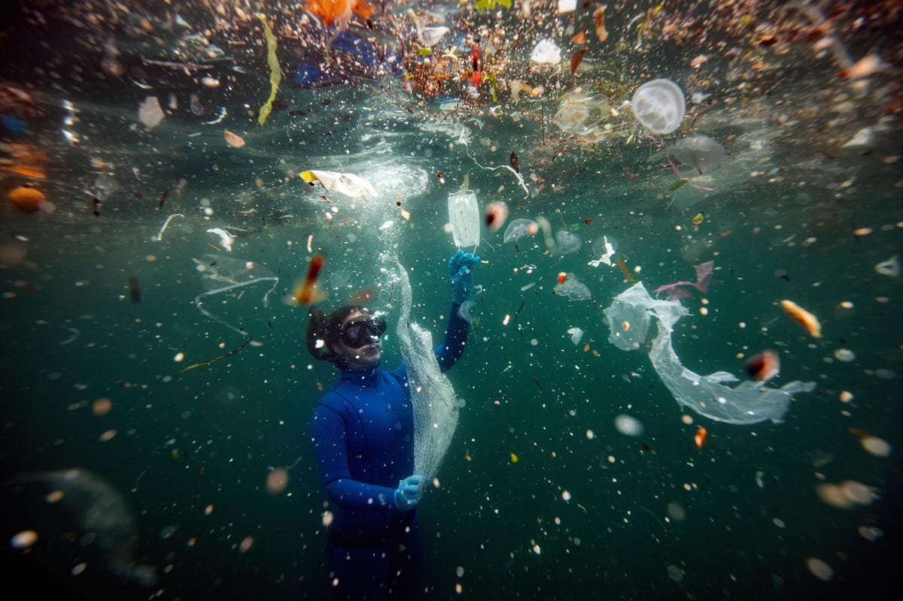

★Miért fontos hogy tisztán tartsuk vizeinket?
A víz alapvető életünkhöz elengedhetetlen szerepet tölt be, hiszen a testünk több mint 70%-át is víz alkotja. Egy átlag embernek naponta körülbelül 2-3L víz lenne az optimális. A populáció növekedésével arányosan nőtt a szemét mennyisége amit már nem tudnak, vagy nem is akarnak elégetni a szemétégetőkben, így a tengerekbe, óceánokba szórják.....

★Milyen hatással van ez ránk, és az élővilágra?
A tiszta víz = tiszta élet. Ha a vizeinket tisztán tartanánk ami alapvetően az életbenmaradáshoz fontos szerepet tölt be, úgy a környezetünk és mi is egészségesebbek maradnánk. A rengeteg szemét bomlása és égetése globális felmelegedéshez vezethet ami a mai napokban is jelen van. Sok esetben....
